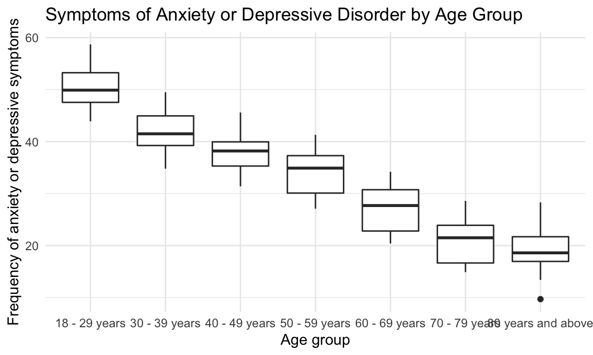

library(tidyverse)## ── Attaching packages ─────────────────────────────────────── tidyverse 1.3.1 ──## ✓ ggplot2 3.3.5 ✓ purrr 0.3.4
## ✓ tibble 3.1.4 ✓ dplyr 1.0.7
## ✓ tidyr 1.1.3 ✓ stringr 1.4.0
## ✓ readr 2.0.1 ✓ forcats 0.5.1## ── Conflicts ────────────────────────────────────────── tidyverse_conflicts() ──
## x dplyr::filter() masks stats::filter()
## x dplyr::lag() masks stats::lag()library(modelr)
library(dplyr)
library(lubridate)##
## Attaching package: 'lubridate'## The following objects are masked from 'package:base':
##
## date, intersect, setdiff, unionknitr::opts_chunk$set(
fig.width = 6,
fig.asp = .6,
out.width = "90%"
)
theme_set(theme_minimal() + theme(legend.position = "bottom"))
options(
ggplot2.continuous.colour = "viridis",
ggplot2.continuous.fill = "viridis"
)
scale_colour_discrete = scale_colour_viridis_d
scale_fill_discrete = scale_fill_viridis_danxiety_df = read.csv("Indicators_of_Anxiety_or_Depression_Based_on_Reported_Frequency_of_Symptoms_During_Last_7_Days.csv") %>%
janitor::clean_names() %>%
select(indicator, group, subgroup, value) %>%
filter(indicator == "Symptoms of Anxiety Disorder or Depressive Disorder") %>%
filter(group == "By Age") %>%
group_by(subgroup) %>%
mutate(row = row_number()) %>%
pivot_wider(
names_from = group,
values_from = value
) %>%
rename(value = 'By Age') %>%
select(-row, -indicator)
anxiety_df## # A tibble: 301 × 2
## # Groups: subgroup [7]
## subgroup value
## <chr> <dbl>
## 1 18 - 29 years 46.8
## 2 30 - 39 years 39.6
## 3 40 - 49 years 38.9
## 4 50 - 59 years 35.8
## 5 60 - 69 years 28.9
## 6 70 - 79 years 21.5
## 7 80 years and above 21.1
## 8 18 - 29 years 47.4
## 9 30 - 39 years 39.3
## 10 40 - 49 years 36.9
## # … with 291 more rowsanxiety_df %>%
ggplot(aes(x = subgroup, y = value)) +
geom_boxplot() +
labs(
title = "Symptoms of Anxiety or Depressive Disorder by Age Group",
x = "Age group",
y = "Frequency of anxiety or depressive symptoms"
)## Warning: Removed 28 rows containing non-finite values (stat_boxplot).